-
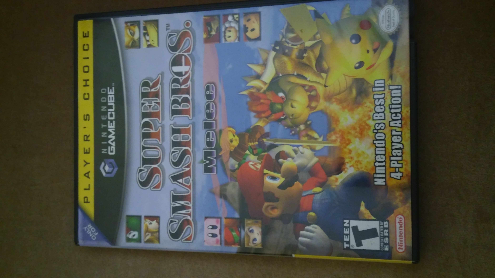
Super Smash Bros Melee is the sequel to Super Smash Bros for the Nintendo 64, and it is an upgrade in every respect, with much higher detail models, a much tighter physics engine with fluid animations, and a much more advanced AI, the game to this day is still played comptitively even after 2 sequels, soon to be 3 with the release of Super Smash Bros Ultimate.
-
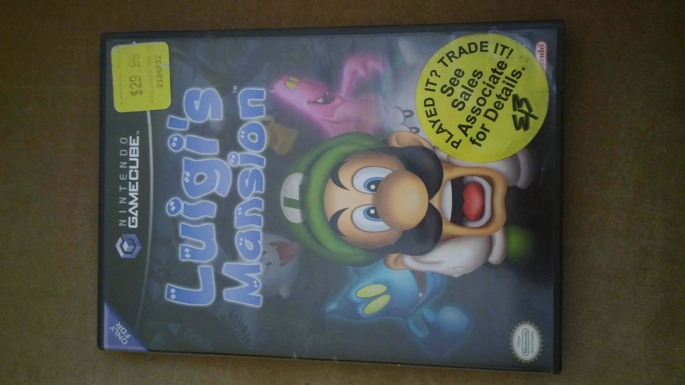
Luigi's Mansion is Luigi's first game where he is the protagonist instead of his considerably more famous brother, Mario. It is about a haunted mansion that Luigi wins, and where Mario has disappeared into. Armed with nothing but a flashlight and a strange vacuum that consumes ghosts, Luigi, not the bravest person, must rescue his brother and uncover the secrets of the mansion. It was a very fun game.
-
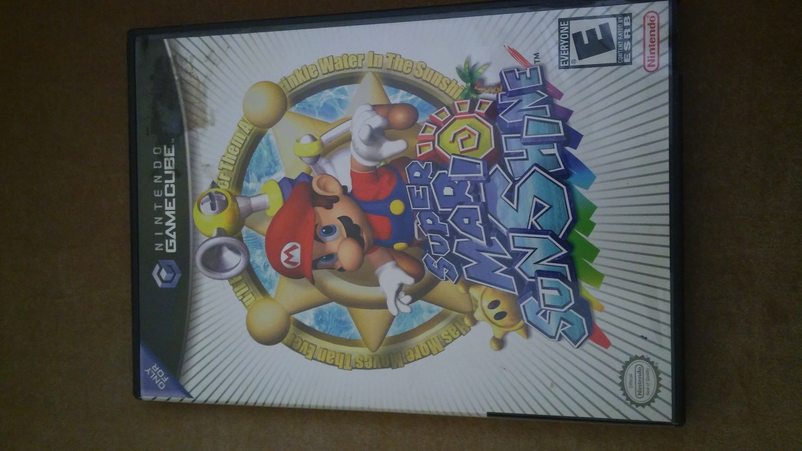
In continuing with the theme of Luigi always playing second fiddle, while he got a haunted mansion, Mario got to enjoy a tropical vacation with the Princess in Super Mario SunShine. Things aren't all they seem however, as a strange toxic substance that engulfs all it covers has spread around the island, and Mario is being blamed despite having just arrived! Who is the doppelganger that's wreaking havoc? Mario teams up with a sentient Super Soaker (it's better than it sounds, trust me) to find out just what's going on on Isle Delphino. This game's movement mechanics are so tight and astounding that it is the standard to which other platformers are compared. It is a common first game for speedrunning as well.
-
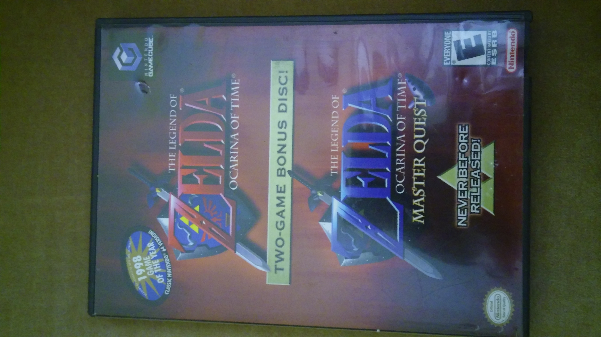
The Legend of Zelda: Ocarina of Time: Master Quest is a rerelease of the Nintendo 64 hit Ocarina of Time, for the GameCube. Master Quest is a harder mode with different dungeon layouts and everything is mirrored as well.
-
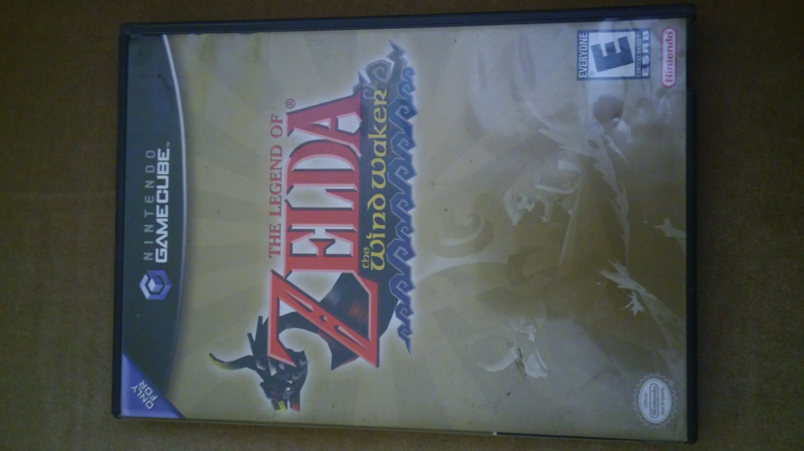
The Legend of Zelda: WindWaker is a stylistically different game from usual Legend of Zelda's. It is cel-shaded, with simplistic character models and whimsical effects. It gives the game a charming cartoony feel, which works well with the massive ocean you must traverse to reach the variou islands around the game. The character of Link here is referred to as Toon Link in games where both versions of Link are represented, i.e. Super Smash Bros Brawl.
-
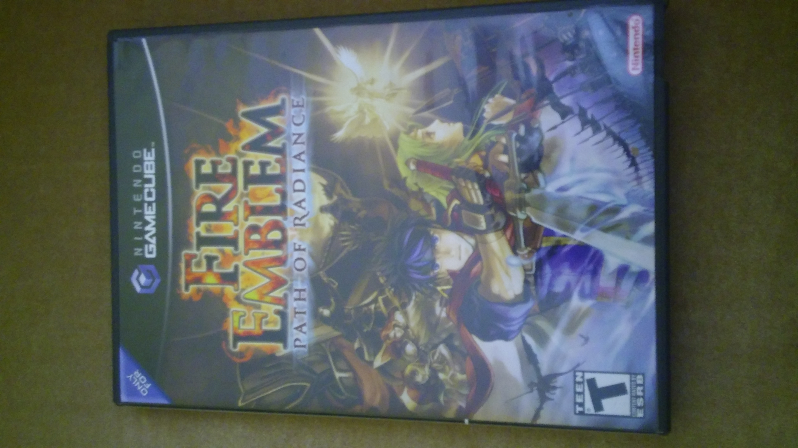
Fire Emblem: Path of Radiance was the first Fire Emblem game to feature 3D models, as up until then all characters were modeled with sprites. It is a strategic game akin to chess, where you and the enemy take turns moving units and fighting eachother until a goal is met, usually routing all units, but sometimes capturing a spot or defending a spot. Combat obeys a Rock-Paper-Scissors like set of rules for its main combat triangle, the Lance-Sword-Axe. It is set in a low fantasy world with political intrigue and philosophical pondering, and does not fail to make it challenging.
-

Pikmin is a story about a crash landing onto an unknown, hostile planet. With an awful lot of similarities to our own. Except Captain Olimar is about the size of a quarter. He enlists the aid of sentient plants, which Olimar names Pikmin, as they remind him of PikPik carrots from home. The Pikmin follow his every order tirelessly, and the game is a test of how well you can micromanage an small army of these frankly adorable little workers. Different color Pikmin have different attributes, and you will need to familiarize yourself with them if you're to have any hope of leaving the toxic oxygen-rich planet before your O2 filter cuts out in 30 days. I've personally been able to finish the game on Day 14/30 with all ship parts, it's very much replayable!
-
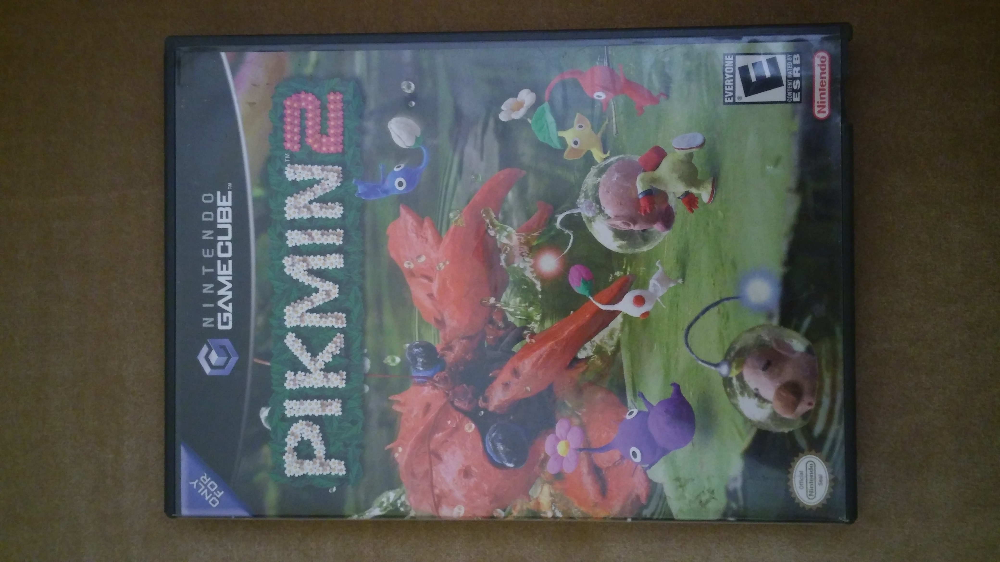
Captain Olimar is back, and he's got a new crewmate, Louie, in this revisit to the toxic planet from the first game. Pikmin 2 has more of a focus on finding treasure to make your company rich instead of just survival, and you're joined by the Pikmin you know and love along with a few new ones. Now you have 2 captains to manage as well, so you can do twice as many thing concurrently as you could in the last game. Your micro and macromanagement skills willbe pushed to the limit in this charming capitalistic adventure.
-
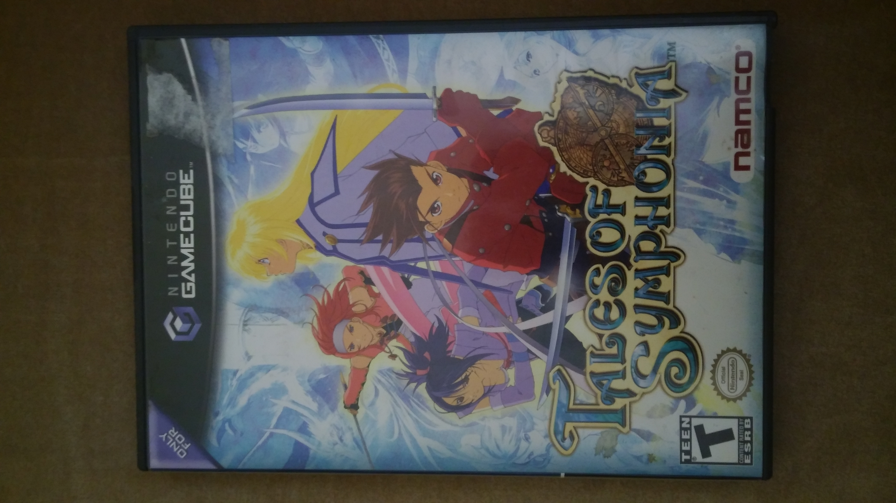
Tales of Symphonia is a game in the Tales series of games from Bandai Namco Entertainment that follows the journey of a young Lloyd as he travels to save the world from rampant slavery and other serious issues like racism. Tales games distinguish themselves from other RPG's with their unique battle system which rewards combos and plays much like 2D fighters.
-
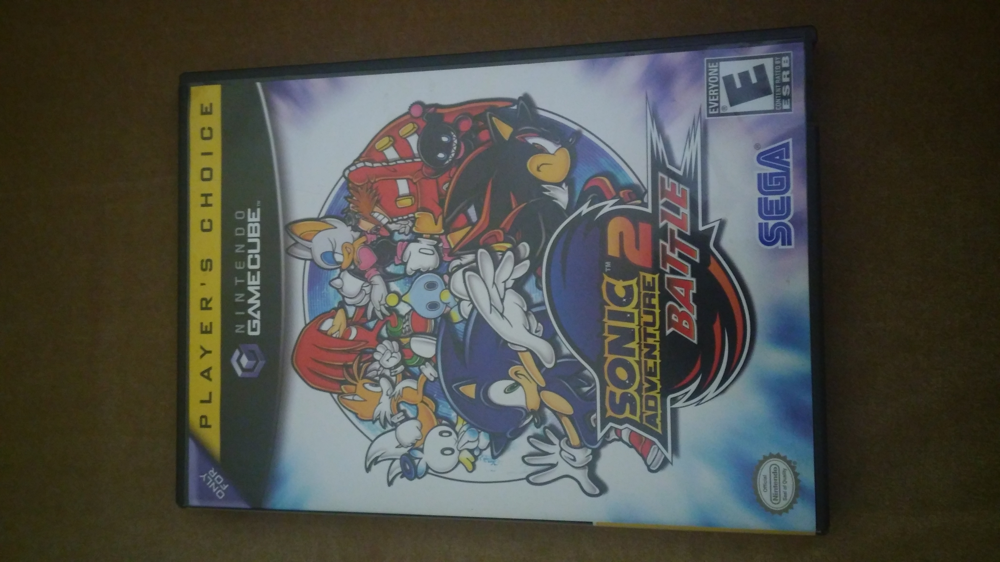
After Sega exited the console market it became a third-party developer. One of the last games released on its final console, the DreamCast, was Sonic Adventure 2. It was subsequently rereleased for the GameCube as Sonic Adventure 2: Battle with a new multiplayer portion. This is the version I am familiar with. It is a fantastic game that manages to translate Sonic's 2D level design and key feature, speed, and create a wonderful, fast-paced adventure that felt right at home within the Sonic franchise. It also had a Chao raising simulator, Chao being pure hearted creatures akin to babies you fed, trained, and competed against other Chao in races and karate. Because Chao only grew while the player is around them, it is a very engrossing experience that honestly took more of my time than the story portion of the game! Sega succeeds in making you care about these Chao, to where you're eager to see them after a level with an assortment of goodies you found to give to them. Absolutely one of my favorite games, please Sega BRING BACK CHAO GARDEN!
-
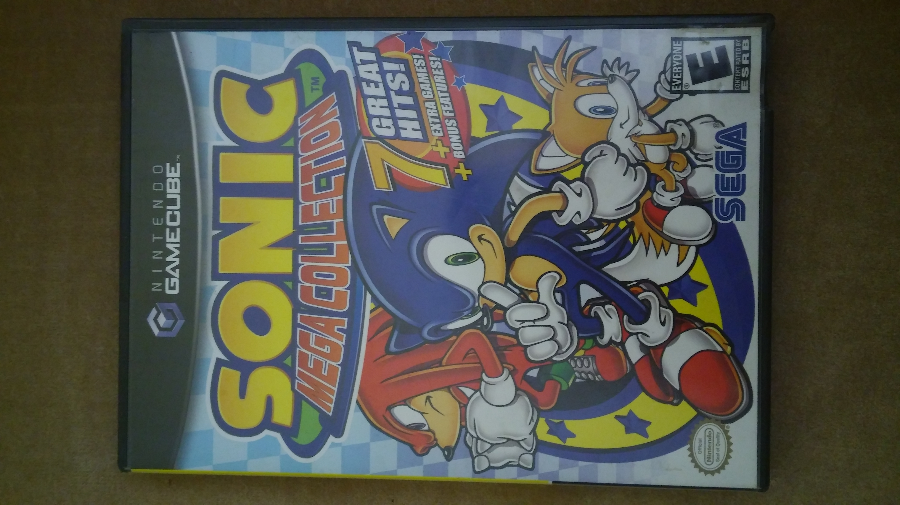
The Sonic Mega Collection is a collection of 10-12 (depending on region) classic Sonic games from the Sega Genesis ported and run through an emulator on the GameCube. The collected games are:
- Sonic the Hedgehog (1991)
- Sonic the Hedgehog 2 (1992)
- Sonic Spinball (1993)
- Dr. Robotnik's Mean Bean Machine (1993)
- Sonic the Hedgehog 3 (1994)
- Sonic and Knuckles (1994)
- Sonic 3D Blast (1996)
- Sonic & Knuckles add-on Blue Sphere
- Sonic & Knuckles add-on Knuckles in Sonic 2
- Sonic & Knuckles add-on Sonic 3 & Knuckles
- Flicky (1991)
- Ristar (1995)
- Comix Zone (1995 Japan only)
- The Ooze (1995 Japan only)
The last 4 games listed are not Sonic games but are made by Sega. The Sonic & Knuckles add-on functioned by attaching other Sonic games to the top of the unique cartridge, not unlike Game Genie, emulated here on GameCube software. -
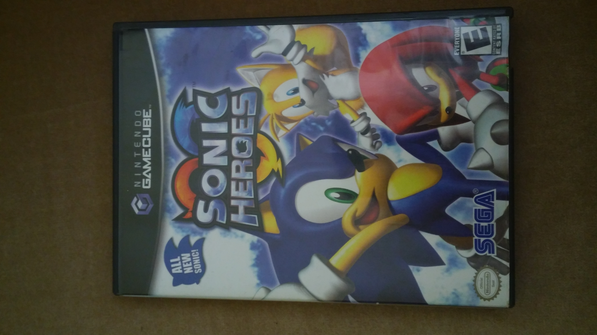
Sonic Heroes introduced the concept of teams of 3 with a few teams whose stories intertwined around Dr. Ivo "Eggman" Robotnik's latest scheme. Or does it? This entry was maligned for having new voice actors for iconic characters and frankly bizarre out-of-character interactions and an amnesiac Shadow, which ties into the next game on the list...
-
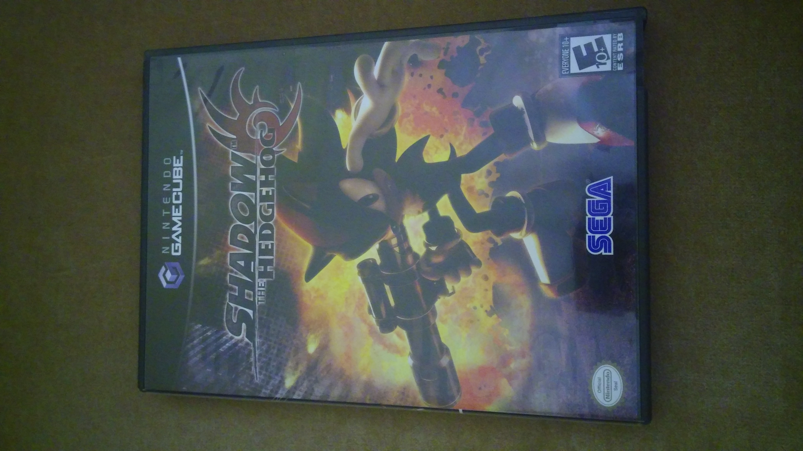
With the introduction of Sonic's dark counterpart, Sega decided to embrace the bad boy Shadow the Hedgehog and give him his own game. Complete with guns, cars, alien invasion plot, and an interesting morality system. On every level you have a choice of 3 goals. The Hero goal, the Neutral goal, and the Dark goal. Hero goals were generally rescue X amount of NPC's from evil NPC's, Neutral goals were generally just reach the end of the level, and Dark goals were generally just go be a dick for the sake of it. Depending on what goal you reached, you went to a different level. The path you take to the end of the game determines what Shadow decides his fate shall be. Will he save the world? Or side with the evil aliens? Or maybe there's a secret hidden option? There's over 200 unique paths you can take, so this game is endlessly replayable. The caveat being that it's an edgy dark game with an E10 rating. So be prepared to hear a lot of "Damn" and "Darn" and bloodless carnage will ensue.
-
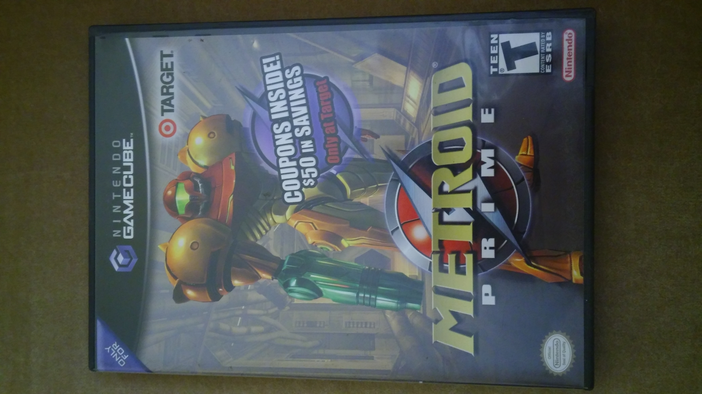
Metroid Prime was the first 3D Metroid game, a series of side-scrolling shooters with puzzle elements and emphasis on backtracking that is essentially its own genre shared with Castlevania. Metroid Prime bridged the 2D-3D gap amazingly, bringing to life the alien locales that female bounty hunter Samus Aran visits, and including a Scan Log with endless amounts of world building to read through. A fantastic game I will always be happy to replay.
-
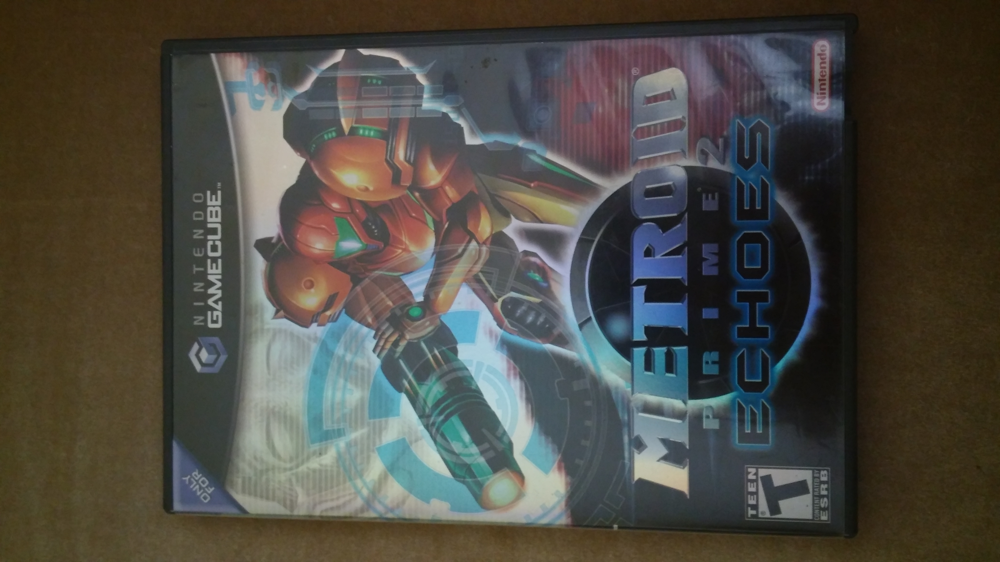
Metroid Prime 2 was the sequel to Metroid Prime, and adds a few new weapons and equipment, as well as tightening up the gameplay and introducing new mechanics such as the Screw Attack. By all standards it was an improvement and had a solid story.
-
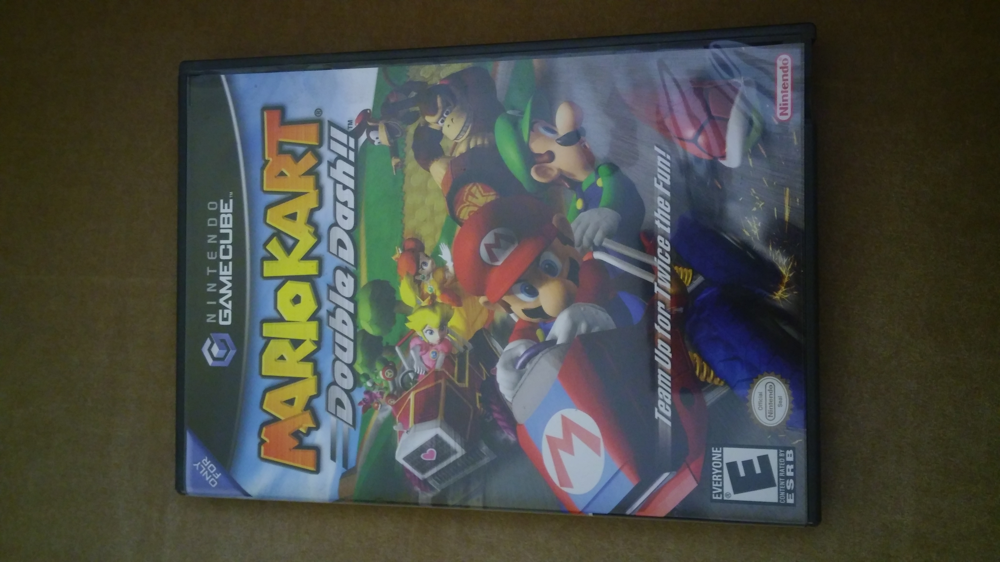
Nintendo's version of a racing game, Mario Kart: Double Dash was a massive improvement over the GBA Mario Kart thanks to the much more powerful GameCube hardware. It also introduced a novel concept: Tandem karts. Two players could ride the same kart, one would be in charge of driving and initiating drifts, the other would be in charge of using items and enabling drift boosts. With each racer having access to a different unique item, the combination of racers was staggering, and the characters could swap position any time.
-
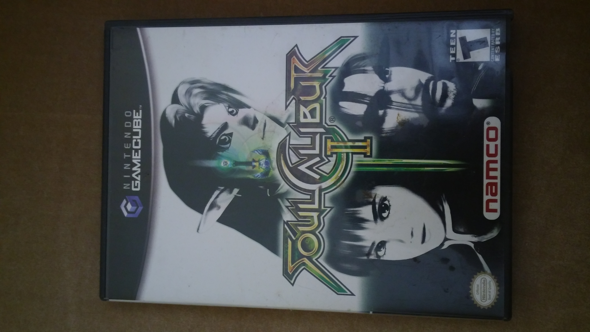
Soul Calibur 2 was Soul Calibur's first entry across multiple platforms, and the GameCube version came with Legend of Zelda's Link as a fighter. Unlike Super Smash Bros where the goal is to knock your opponent off the stage a la sumo, Soul Calibur is a more traditional fighter with complex move inputs and health bars. This genre of games attracts a certain kind of gamer willing to learn movelists and optimal combos. This game also blessed us with Voldo, the gimp who'll cartwheel you into an early grave. I mean, just look at the guy!